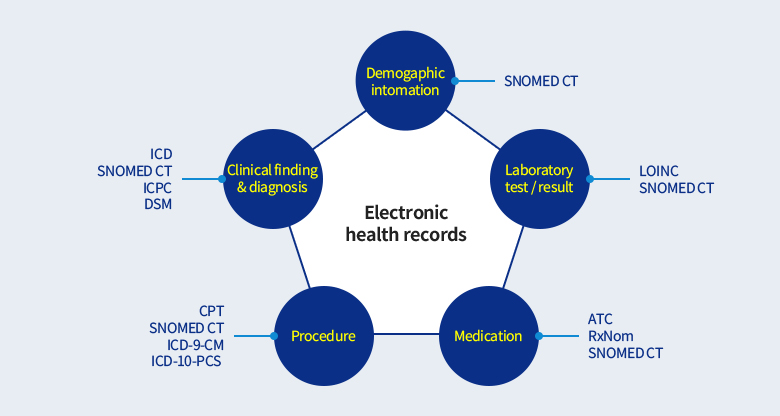

표준용어
표준용어체계란?
- EHR시스템에 포함된 정보의 의미론적 상호운용성(semantic interoperability)*을 보장하기 위해, 다양하게 표현되는 의료용어에 대해 같은
의미로 분류될 수 있도록 개념화한 용어체계를 의미함.
- 보건의료 분야에서의 의미론적 상호운용성이란, 서로 다른 네트워크, 정보시스템, 소프트웨어간에 교환을 요청하는 정보의 의미와 제공하는
정보의 의미, 즉 사용된 용어와 어구의 의미를 정보시스템이 이해하는 것을 의미함
- 보건의료분야별 대표적으로 활용되는 국제표준용어체계는 그림과 같음.

- OECD에서 2017년에 발표한 보고서에 따르면, 보건의료분야내 가장 많은 분야에서 활용되고 있는 표준용어체계는 SNOMED CT로 나타남
| |
진단명 |
검사 |
영상의학 |
치료 및 시술 |
의약품 |
| ICD* |
24 |
- |
2 |
8 |
- |
| SNOMED CT |
6 |
4 |
3 |
5 |
3 |
| ICPC |
4 |
- |
- |
- |
- |
| LOINC |
- |
14 |
2 |
- |
- |
| DICOM |
- |
- |
13 |
- |
- |
| NCSP |
- |
- |
- |
6 |
- |
| ATC |
- |
- |
- |
- |
13 |
주) *ICD9, ICD-9-CM, ICD-10, ICD-10-CM, ICD-10-AM, ICD-10-CA포함
참고문헌: OECD(2017). Readiness of electronic health record systems to contribute to national health information and research
- 따라서, 본 과제에서는 SNOMED CT를 대표적인 표준용어체계로 선정하여, 국내에서 활용되는 KCD7(진단), 의약품표준코드(의약품), 건강보험심사평가원의 건강보험 행위분류코드(검사, 시술 및 처치)를 SNOMED CT로 표준화하였음